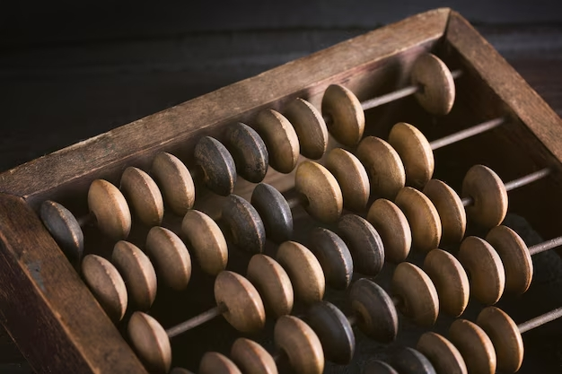
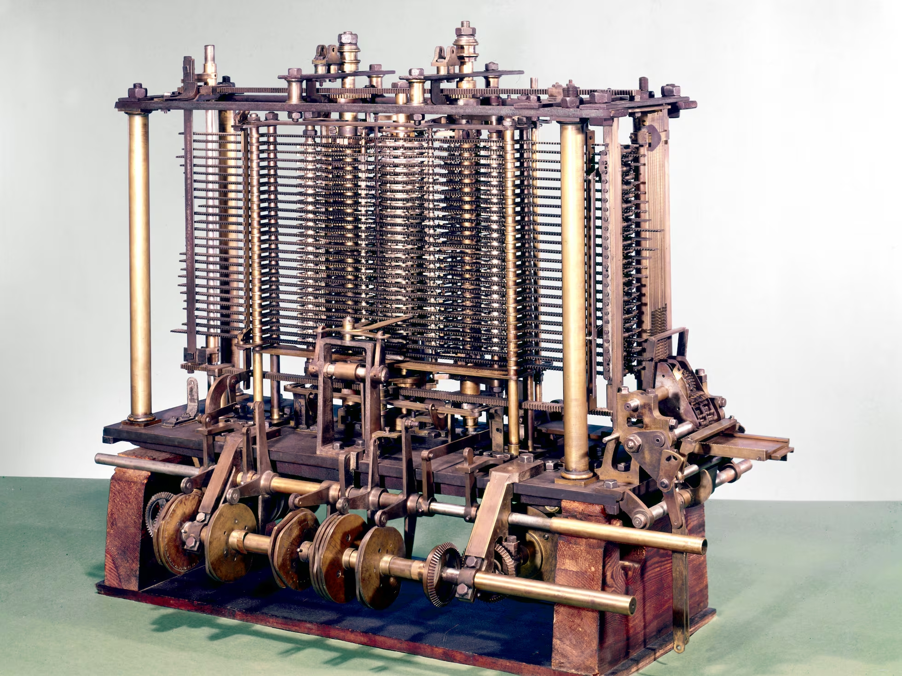
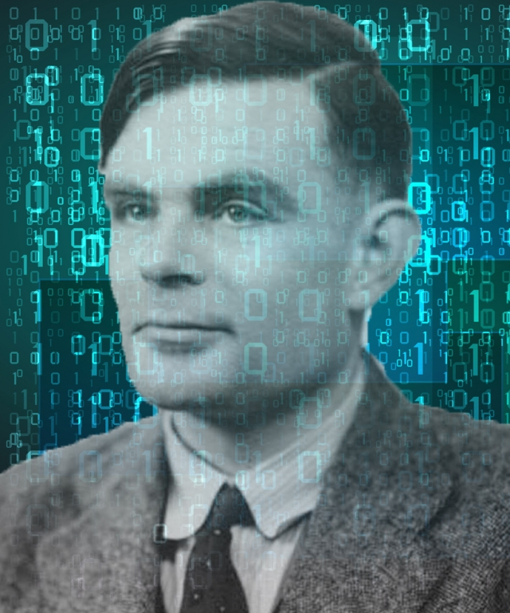
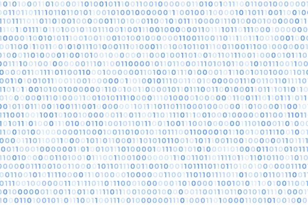

Los Inicios de la Computación
El Origen de la Computación: Del Ábaco al Código Binario
La historia de la computación es un fascinante viaje a través de la innovación humana y el desarrollo tecnológico. Comienza con herramientas sencillas como el ábaco y culmina en la complejidad del código binario que alimenta las modernas máquinas de cálculo.
El Ábaco: La Primer Computadora
El ábaco, uno de los primeros instrumentos para realizar cálculos, data de hace miles de años. Se cree que se utilizó en la antigua Mesopotamia y China. Consiste en un marco con varillas que sostienen cuentas movibles, que se utilizan para sumar, restar, multiplicar y dividir. Aunque sencillo, el ábaco fue una herramienta crucial para el desarrollo del pensamiento matemático y el cálculo.
La Máquina de Diferencias: Charles Babbage
Avanzando unos siglos, Charles Babbage, un matemático británico del siglo XIX, diseñó la máquina de diferencias. Esta máquina fue uno de los primeros intentos de construir una calculadora mecánica automática. Aunque no fue completada en su tiempo, la máquina de diferencias sentó las bases para las futuras computadoras mecánicas.
La Computadora de Turing: Alan Turing
Alan Turing, un matemático y lógico británico, propuso en 1936 la máquina de Turing, un modelo abstracto que define la computación en términos de manipulación de símbolos. Su concepto de una máquina universal y el desarrollo de la teoría de la computación influyeron enormemente en la creación de las primeras computadoras electrónicas.
El Código Binario: La Base de la Computación Moderna
El código binario, un sistema numérico que utiliza solo dos dígitos, 0 y 1, es fundamental para las computadoras modernas. Este sistema fue popularizado por el matemático y filósofo alemán Gottfried Wilhelm Leibniz en el siglo XVII. Su simplicidad y eficiencia en representar datos y realizar operaciones matemáticas lo convirtieron en la base de la computación digital moderna. Cada bit de información en una computadora se representa en código binario, permitiendo que los sistemas electrónicos realicen complejas tareas a partir de simples combinaciones de 0 y 1.
Conclusión
La evolución de la computación es una historia de constante innovación y mejora tecnológica, que refleja el ingenio y la perseverancia humana en la búsqueda de herramientas más eficaces para resolver problemas y realizar cálculos. Desde el ábaco, una herramienta sencilla pero poderosa para la época, hasta el sofisticado código binario que fundamenta las modernas computadoras, cada paso en este camino ha marcado un hito importante en la historia de la tecnología.
1. El Ábaco como Base del Cálculo: Aunque el ábaco puede parecer rudimentario comparado con la tecnología actual, fue una herramienta esencial que permitió a las civilizaciones antiguas realizar cálculos de manera más eficiente. Su diseño y funcionamiento influyeron en el desarrollo posterior de herramientas matemáticas y computacionales.
2. Máquina de Diferencias de Babbage: Aunque la máquina de diferencias de Charles Babbage no fue completada durante su vida, sus ideas fueron revolucionarias. Babbage anticipó muchos conceptos fundamentales de la computación moderna, como la idea de una máquina programable. Sus diseños sentaron las bases para el desarrollo de computadoras mecánicas y electrónicas.
3. Máquina de Turing y la Teoría de la Computación: Alan Turing revolucionó el campo con su propuesta de la máquina de Turing, que definió el concepto de algoritmo y computación. Su trabajo teórico proporcionó el marco para la construcción de las primeras computadoras electrónicas y estableció los principios de la computación que aún se aplican hoy en día.
4. Código Binario y la Computación Digital: La introducción del código binario por Gottfried Wilhelm Leibniz fue un avance crucial. Este sistema simple y eficiente permitió el desarrollo de circuitos digitales y computadoras electrónicas. El código binario se convirtió en el lenguaje de las máquinas, facilitando el almacenamiento, procesamiento y transmisión de datos de manera que sería impensable con sistemas numéricos más complejos.
5. Impacto en la Tecnología Moderna: Los avances desde el ábaco hasta el código binario han culminado en la tecnología de computación que utilizamos hoy en día. Las computadoras modernas, que dependen del código binario para realizar cálculos y ejecutar programas, son el resultado de siglos de desarrollo y refinamiento. La capacidad para realizar millones de operaciones por segundo, procesar grandes volúmenes de datos y ejecutar aplicaciones complejas es el legado de esta evolución histórica.
En resumen, la computación ha recorrido un largo camino desde sus humildes comienzos. Cada desarrollo, desde el ábaco hasta el código binario, ha sido un peldaño hacia una mayor capacidad y eficiencia en el procesamiento de información. La historia de la computación no solo es un testimonio del progreso tecnológico, sino también un reflejo del ingenio humano y la capacidad para transformar conceptos abstractos en herramientas prácticas y poderosas.